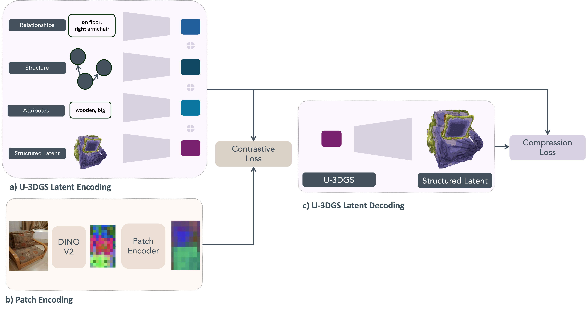

Learning 3D Gaussian Splats from Scene Graph Embeddings


Overview of the proposed pipeline which learns object embeddings to reconstruct 3D Gaussians and support downstream tasks such as visual localization. (a) The method takes a mesh or point cloud of an object along with posed images observing it. The canonical object space is voxelized based on object geometry, and DINOv2 features extracted from the images are assigned to each voxel. This produces a 64 x 64 x 64 x 8 structured latent (SLat) representation. (b) The SLat is further compressed into a 16 x 16 x 16 x 8 U-3DGS embedding using a 3D U-Net. The embedding is trained with a masked mean squared error loss to ensure accurate reconstruction of the SLat, which in turn enables decoding into 3D Gaussians using standard photometric losses. (c) Additional task-specific losses, such as those for visual localization, can be incorporated to optimize the embedding for multiple objectives.

Learning downstream tasks with U-3DGS embeddings. (a) Multimodal Latent Encoding: Each modality from the 3D scene graph -relationships, structure, attributes, structured latent- is encoded individually and combined into a structured latent representation. This embedding captures spatial, semantic, and relational properties of each object. (b) Patch Encoding: A posed RGB image is encoded using a pretrained DINOv2 backbone followed by a patch-level encoder, producing image patch embeddings that align with object-level multimodal embeddings. (c) U-3DGS Latent Decoding: The structured latent embedding is used to decode a 3D Gaussian Splat representation. A contrastive loss aligns image patches with their corresponding object embeddings, while a compression loss ensures the latent remains reconstructable. Together, this enables the U-3DGS embedding to support both downstream tasks (e.g., visual localization) and high-fidelity 3D reconstruction.
If you find our work useful, please consider citing:
Place Holder for citation